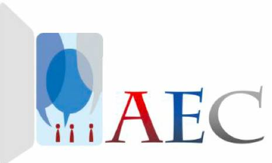
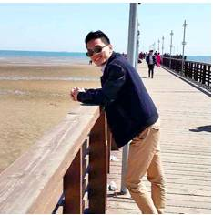
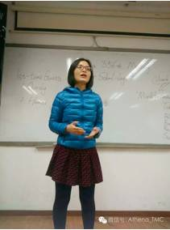

Time：15:00-17:00, Saturday, December 17th
Venue: Room B225, New Main Building, Beihang University.
Attention

This week Beihang Toastmaster Club and Ameco Excellent Club will hold a second joint meeting.

Table topic
Role on the team
Toastmaster: Whiston
Table Topics Master: Peter
Now 2016 is coming to an end. Do you still remember the resolutions you made at the beginning of the year, such as reading more books, doing more exercise or losing weight? Have you kept these resolutions?
This week our handsome TTM Peter has prepared several interesting questions about resolution. Welcome to our meeting this Saturday afternoon. It will be a good chance to sum up the past and look into the future.
Prepared speech part (CC)
Andy CC6——Letters

Andy is a doctor with many stories. He will share something about letters in his CC6 speech. What kind of letters will Andy talk, letters from home or letters to his beloved girls? Let us look forward to Andy’s speech.
Blair AC94—School Bully between Girls

Attention! Champion is coming! The champion of D88 Blair will come to Beihang and give her AC4 speech. It is really wonderful news. Let us wait and see!
What is Toastmasters?

Toastmasters International (TI) is a nonprofit educational organization that operates clubs worldwide for the purpose of helping members improve their communication, public speaking, and leadership skills.
You can find us by the following map of Beihang University.

https://mp.weixin.qq.com/s/VdDvftXdbhXqUG-nVg4__Q
本页为抢救式本地归档，图文已永久保存。